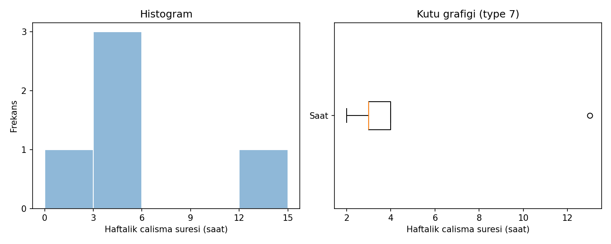

B03 · V1
Ortalama öykünün tamamı mı?
Beş yapay gözlem
Haftalık çalışma süreleri: 2, 3, 3, 4, 13 saat.
Ortalama 5; medyan 3; örneklem varyansı 20,5; örneklem standart sapması 4,527693. Type 7 çeyrekler Q1=3, Q3=4; IQR=1. Aykırılık sınırları 1,5 ve 5,5.

Histogram sınıfları [0,3), [3,6), [6,9), [9,12), [12,15]; frekanslar 1, 3, 0, 0, 1. Kutu 3–4, medyan 3, bıyıklar 2–4; 13 ayrı noktadır.
13 ana veriden silinmez. Ayrı duyarlılık hesabında 13 hariç n=4, ortalama=3 ve medyan=3 olur. Ortalamanın neden değiştiğini açıklayın.